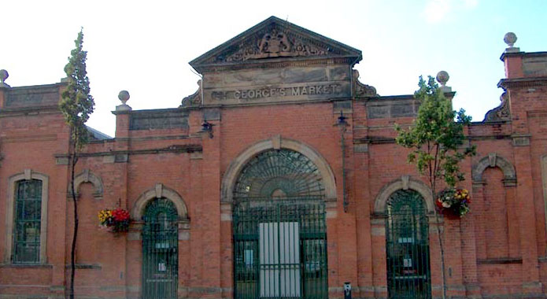
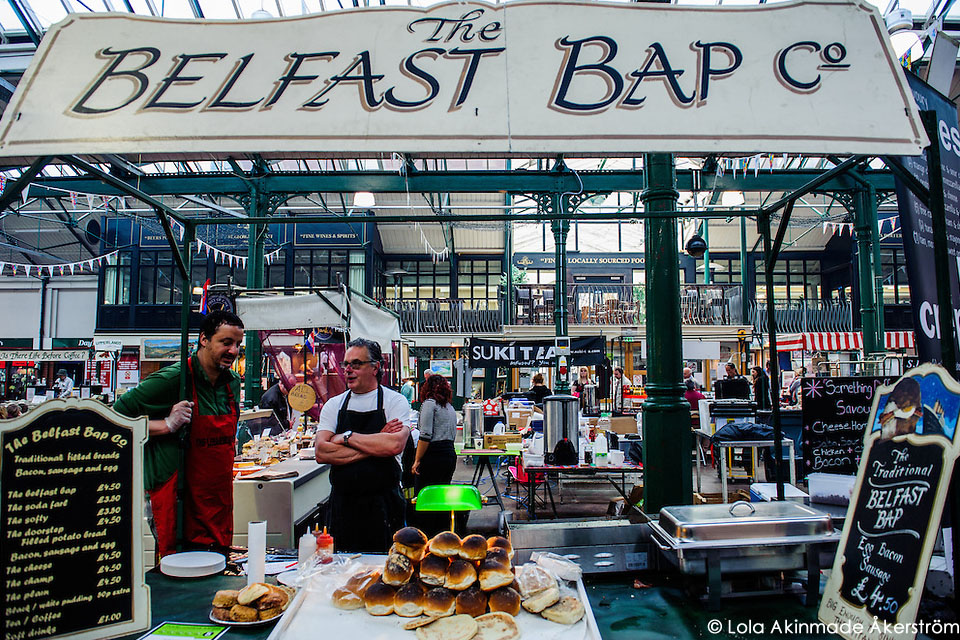

There has been a Friday market on the St George's site since 1604. The present award-winning St George's Market, built between 1890 and 1896, is one of Belfast's oldest attractions.
As well as being home to some of the finest fresh produce, with customers travelling near and far to sample the delights of Friday, Saturday and Sunday markets, it has become one of the city's most popular places to visit.
Since its £4.5m refurbishment in 1997, this charming Victorian building offers one of the most vibrant and colourful destinations that Belfast has to offer.

Victorian architecture
St George's Market is the last surviving Victorian covered market in Belfast, Northern Ireland. It is located on May Street, close to the River Lagan and the Waterfront Hall. Belfast Corporation (now Belfast City Council) commissioned the building of St George's Market, which was built in three phases between 1890 and 1896. Before 1890 St George's Market was an open market and most likely contained a slaughterhouse and a meat market. Today it is a thriving market with 300 traders, crafters musicians and foodies.
Music venue
The market also regularly holds music concerts. Acts including Duffy, Newton Faulkner, Deep Purple, Kasabian, Biffy Clyro and Mark Ronson have played the venue. In March and April 2012, the venue also served as one of the main stages at the World Irish Dancing Championships, alongside the Belfast Waterfront Theatre.
Quality Foods
With its bountiful agricultural land and nurturing climate, it comes as no surprise that Northern Ireland has a rich history in producing quality food and drink. It is renowned for the reputation of its local food producers, with many using techniques and recipes handed down through generations. In recent years, there has been a reviving of forgotten crafts, such as brewing cider and making cheese, which have complimented the traditional butchers, who often work closely with local farmers, and independent bakeries, offering speciality breads and sticky cakes, which still flourish in most towns and villages.

Top Reasons To Visit
With its bountiful agricultural land and nurturing climate, it comes as no surprise that Northern Ireland has a rich history in producing quality food and drink. It is renowned for the reputation of its local food producers, with many using techniques and recipes handed down through generations. In recent years, there has been a reviving of forgotten crafts, such as brewing cider and making cheese, which have complimented the traditional butchers, who often work closely with local farmers, and independent bakeries, offering speciality breads and sticky cakes, which still flourish in most towns and villages.
Top Reasons To Visit:
Sample Belfast's best produce and chat with the traderms
Relax over coffee and soak up the atmospherme
Pick up unique gifts and souvenirs of Belfast
Listen to some of the best local musicians - for free!
Explore an important part of Belfast's living history